Clear Noon
A Norwegian valley under Mediterranean noon: hard white light, deep blue shadows, granite and snow. The imagery is real (NASA orbit photographs, a real elevation model, Library of Congress plates), the town is a row of painted wooden houses, and the company timeline is the road along the valley floor. One idea per screen, a great deal of sky.
Granite, glacier, snow, moss
oklch(25.2% 0.019 248.6)
ink, night water
oklch(37.7% 0.019 242.3)
secondary text, plinths
oklch(47.7% 0.050 231.6)
links, eyebrows
oklch(78.1% 0.039 229.5)
shadow side of snow
oklch(95.9% 0.010 87.5)
page
oklch(92.5% 0.010 87.5)
cards, wells
oklch(50.8% 0.057 123.0)
rare, valley floors
oklch(43.8% 0.137 30.2)
the road. one accent
oklch(67.5% 0.127 74.8)
houses only
oklch(73.1% 0.115 85.2)
hover reveals only
Antonio
Display: Antonio (Vernon Adams, SIL OFL), variable 100–700, condensed poster face. Set in caps, tracked +0.06 to +0.12em. Text: Alegreya Sans (Juan Pablo del Peral, SIL OFL), a humanist sans with calligraphic warmth.
The peak and the road
The mark is a condensed peak (the A of the poster face, drawn sharper) with one falu-red road crossing its valley. The wordmark is outlined Antonio, tracked wide, underlined by the same road.
identity/mark.svgmark-light.svgmark-bare.svg / mark-bare-snow.svgfavicon.svg (adapts to dark mode), favicon-180.pngwordmark.svg · wordmark-current.svg (currentColor)wordmark-snow.svg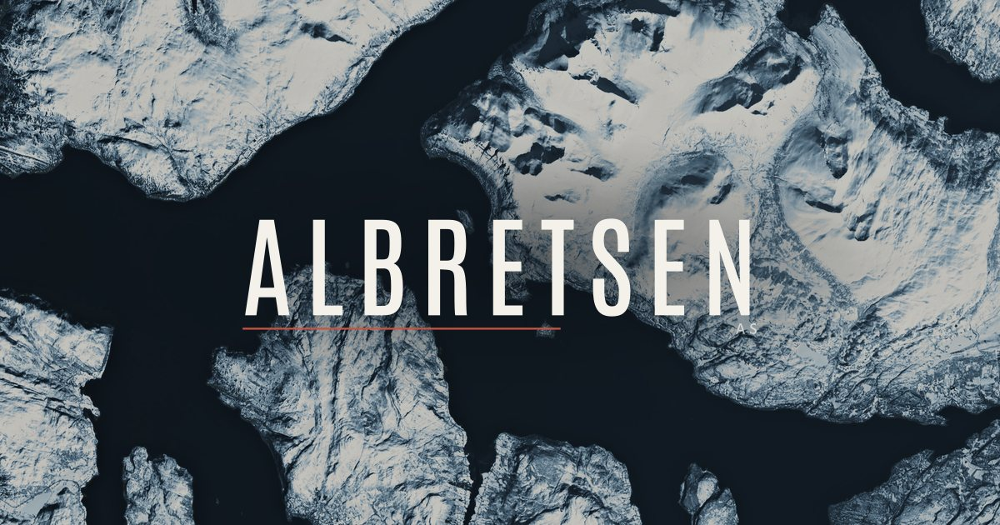
identity/og-image.jpg 1200×630 · identity/lockup.svg in the header aboveSeen from orbit, seen at noon
hero/aerial-fjord-fingers-{960,1600,2400}.avif, -1280.jpg · NASA/USGS ASTER, regradedhero/aerial-snowfield-*hero/aerial-river-road-*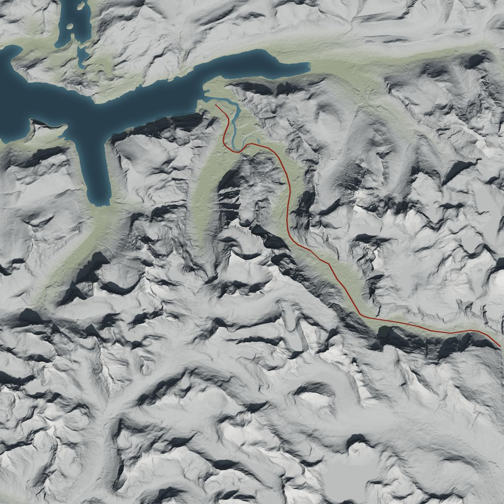
hero/relief-romsdal(-road)-* · Copernicus DEM, noon relief, road traced along the valley floor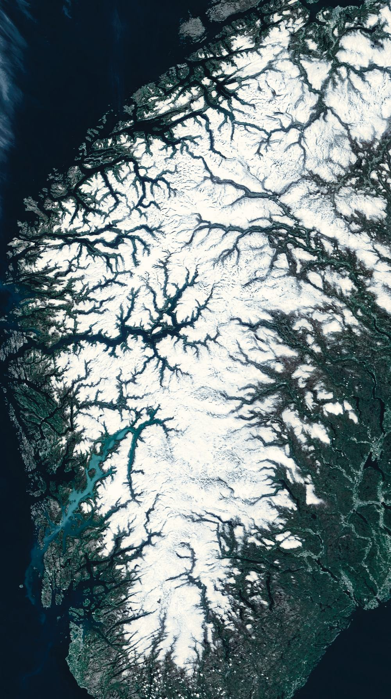
hero/coast-portrait-{600,1000,1300}.avif · NASA MODIS, the whole coast. Mobile hero.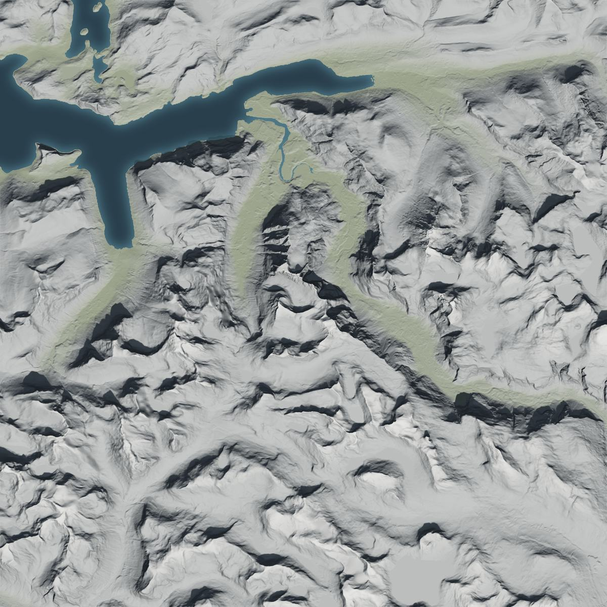
hero/relief-romsdal-* · without the road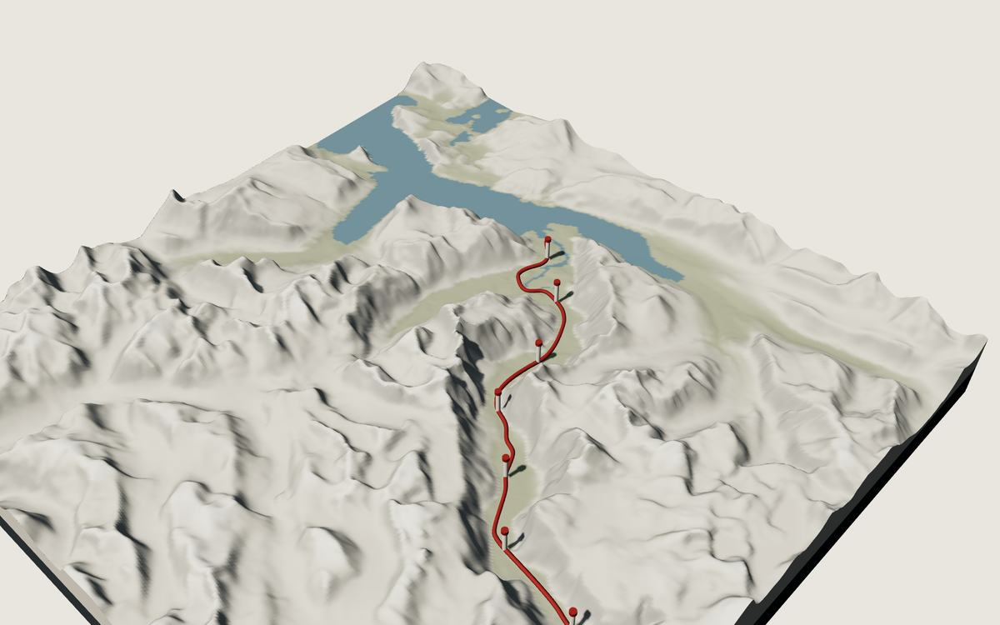
extras/model-romsdal-* · baked still of the 3D modelHover to read the land
Move the pointer over the relief. A soft lens reveals the 100 m contours and the road beneath the light.
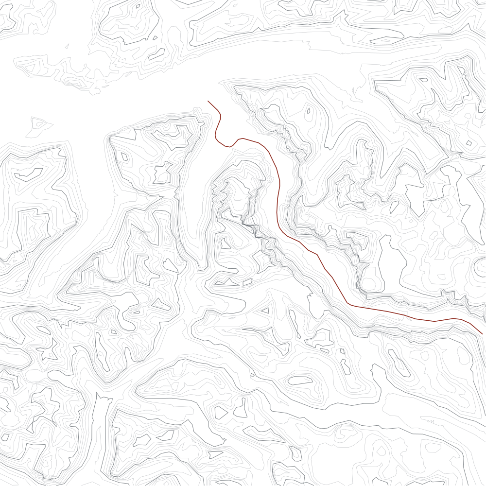
The model and the road
A plaster model of a real valley (30 × 30 km) under a hard noon sun. The red road is the timeline: 2016 at the fjord, today in the foreground. Move the pointer to swing the sun, hover a post to read it, drag the slider to drive.
interactive/relief3d.js (three.js 0.160.0, lazy) · romsdal-height.png/.json · road.json · milestones.json · relief-demo.html
Main street
Each product is a house on one quiet street, with its real logo on an enamel sign. Hover a house: the windows light, gold leaf appears on the glass, the door opens. Harbor, paused, keeps its shutters closed until you look.
products/house-*.svg (inline them for hover) · house-*-revealed.svg · raster house-*-800.webp both states · real logos in products/logos/
Retired: enamel plates
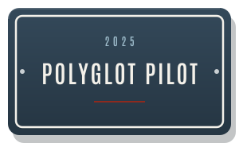
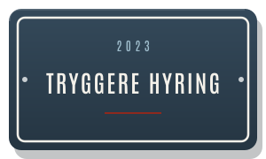
products/retired/*.svg · Luma uses its real logo
Texture and ephemera
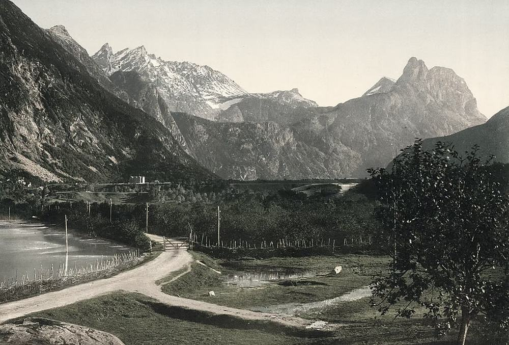
extras/plate-valley-road-* · LoC photochrom, c.1890–1900, regraded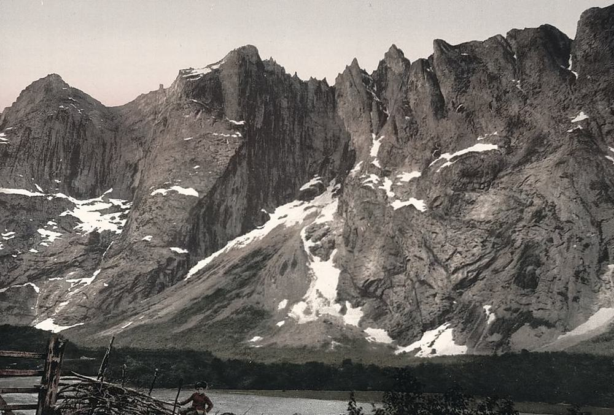
extras/plate-trolltindene-*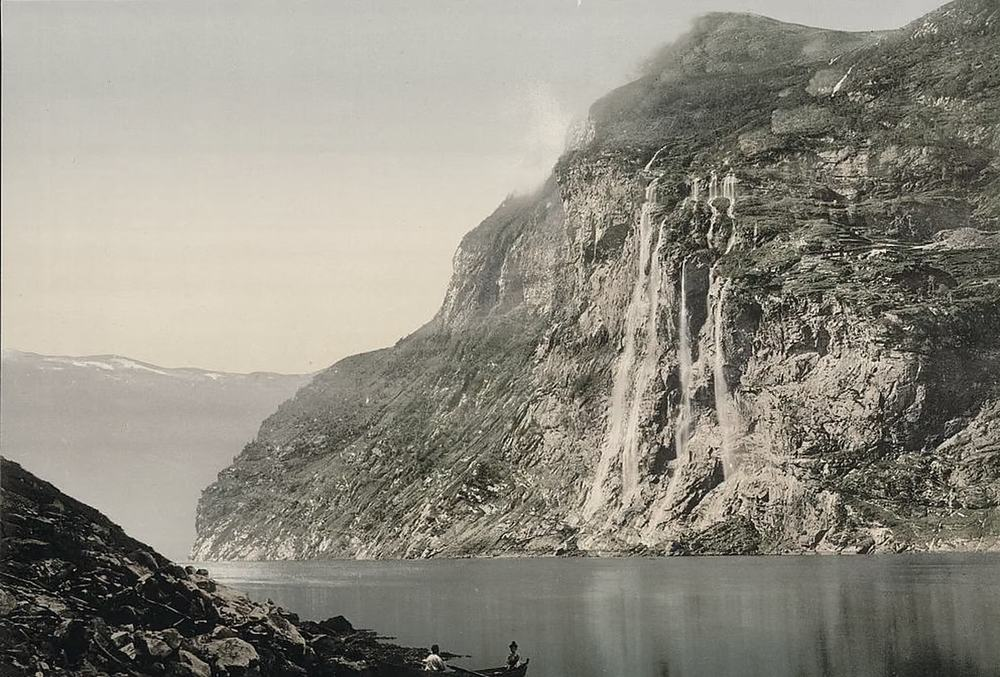
extras/plate-geiranger-*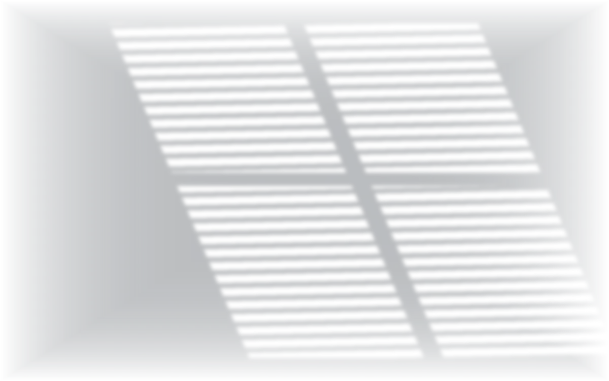
shutter-shadow-1200.webp · noon through a louvred shutter, overlay on any surfacepaper-512.{webp,jpg} · tileablegrain-256.png · tileable, multiply at 20–40%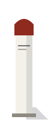
milestone-post.svgcontours-romsdal.svg · 100 m contours, real DEMSix movements
Noon Dissolve
Photographs cross-dissolve over each other (2.4 s), each drifting on its own longer timeline so nothing freezes mid-fade. Playing in the hero above. .dissolve + noonDissolve()


Relief Lens
An eased, soft-edged circular mask follows the pointer and reveals the drawing under the photograph. The radius animates through a registered custom property. .lens + reliefLens()
Road Draw
The falu road draws itself as the timeline scrolls into view, scroll-driven where the browser supports it, once on entry otherwise. .road-draw + roadDraw()
Shadow Swing
Objects carry a hard noon shadow. On hover the sun moves: the shadow swings across and shortens, the object lifts two pixels. Try the plates above. .swing
Condensed Rise
Poster-face letters rise from a baseline mask with a 45 ms stagger, then the red rule extends. Used once per page, for the name. condensedRise()
Toolrails
Window Light
The houses reveal hidden detail on hover: panes light, gold-leaf figures appear on dark glass, the door swings open, shutters fold away. The CSS lives inside each SVG.